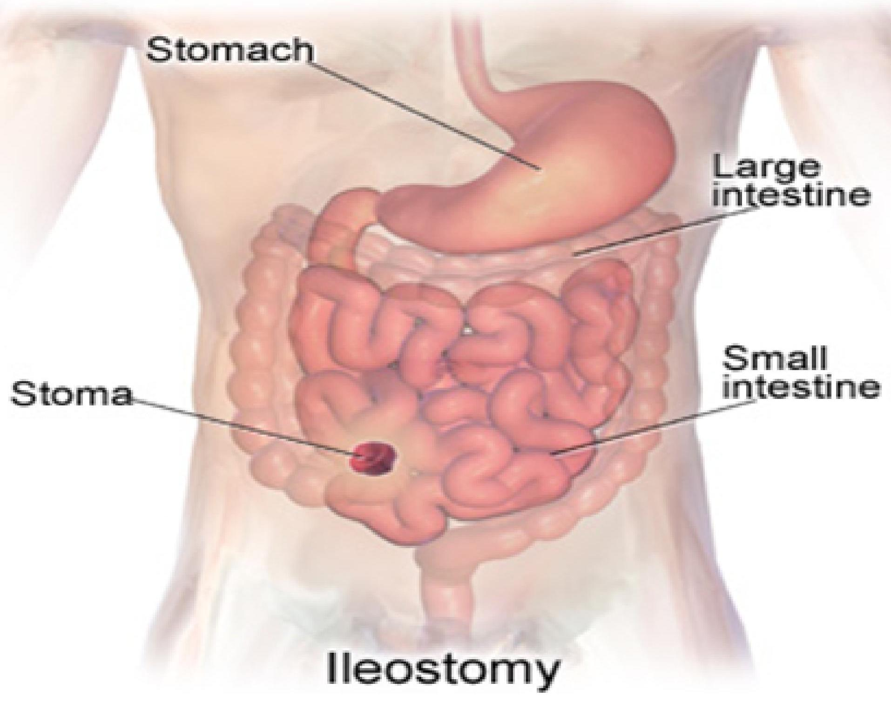

Advance nursing procedures
1. Lumbar puncture (LP)
- Refers to the insertion of a hollow tube needle under local anesthesia into the subarachnoid space of the spinal canal to obtain csf
- The needle is usually inserted into the subarachnoid space between the third and fourth or fourth and fifth lumbar vertebrae.
Indications for LP
- to obtain CSF for examination,
- to measure and reduce CSF pressure,
- to determine the presence or absence of blood in the CSF,
- to detect spinal subarachnoid block,
- to administer antibiotics intrathecally (into the spinal canal) in certain cases of infection.
- to administer anesthetic agent during surgery
CSF
- The CSF should be clear and colorless.
- Pink, blood-tinged, or grossly bloody CSF may indicate a cerebral contusion, laceration, or subarachnoid hemorrhage.
- Usually, specimens are obtained for cell count, culture, and glucose and protein testing.
- The specimens should be sent to the laboratory immediately because changes
Pre procedure management
- Determine whether written consent for the procedure has been obtained.
- Explain the procedure to the patient and describe sensations that are likely during the procedure
- Reassure the patient that the needle will not enter the spinal cord or cause paralysis.
- Instruct the patient to void before the procedure
During the procedure
- The nurse assists the patient to maintain the position to avoid sudden movement, which can produce a traumatic (bloody) tap.
- The patient is encouraged to relax and is instructed to breathe normally
Post procedure
- Instruct the patient to lie prone for 2 to 3 hours to separate the alignment of the dural and arachnoid needle punctures in the meninges, to reduce leakage of CSF.
- Monitor the patient for complications of lumbar puncture; notify physician if complications occur.
- Encourage increased fluid intake to reduce the risk of postprocedure headache.
Complications of LP
- Headache
- Herniation of the intracranial contents,
- Spinal epidural abscess,
- Spinal epidural hematoma,
- Meningitis
- Temporary voiding problems,
- Slight elevation of temperature,
- Backache or spasms,
- Stiffness of the neck
Paracentesis
Puncturing of the peritoneum to remove fluid
Used for
- Drainage of ascites
- Fluid for lab investigations (histopathology)
- For relieving pressure on the chest and abdominal organs
- find the cause of fluid build up
Before the procedure
- Take medical history or any allergies to drugs
- History of bleeding disorders or blood thinning medication
- Assess for pregnancy
- Advise the patient to empty bladder
- Check for a signed consent
During the procedure
- Ensure privacy
- Shave the skin clean
- Record basal vital signs;
- Maintain patency of IV lines, for emergency medications and fluids
- Observe the fluid color and measure quantity
- Immediately seal the puncture wound with sterile dressing
After the procedure
- Monitor IO
- Monitor vital continuously
- Observe for any complication within the first 24 hours
Complications
- Fevers higher than 100 f
- Sever belly pain
- More redness or tenderness
- Blood in urine
- Bleeding from the site
Catheterization
Refers to the introduction of a plastic tube through the urethra into the bladder
When urine cannot be eliminated naturally and must be drained artificially, catheters may be inserted directly into the bladder, the ureter, or the renal pelvis.
Catheters vary in size, shape, length, material, and configuration.
Catheterization is performed to achieve the following:
- Relieve urinary tract obstruction
- Assist with postoperative drainage in urologic and other surgeries
- Monitor accurate urine output in critically ill patients
- Promote urinary drainage in patients with neurogenic bladder dysfunction or urine retention
- Prevent urinary leakage in patients with stage III to IV pressure ulcers
Types of catheterization
Urethral Catheter
common system consists of an indwelling catheter, a connecting tube, and a collecting bag with an antireflux chamber emptied by a drainage spout
Another system has a triple-lumen indwelling urethral catheter attached to a closed sterile drainage system. With the triple-lumen catheter, urinary drainage occurs through one channel
Triple-lumen catheters are commonly used after transurethral prostate surgery.
Suprapubic Catheterization.
Suprapubic catheterization allows bladder drainage by inserting a catheter or tube into the bladder through a suprapubic incision or puncture
Indications of suprapubic catheterization
- Injuries to the urethra
- Strictures in the urethra
- Prostatic obstruction,
- After gynecologic or other abdominal surgery when bladder dysfunction is likely to occur, and
- Occasionally after pelvic fractures.
- long-term basis for women with urethral destruction secondary to long-term indwelling urethral catheters
Advantages of spc
- Patients can usually void sooner after surgery than those with urethral catheters,
- More comfortable.
- The catheter allows greater mobility, permits measurement of residual urine without urethral instrumentation
- Less risk of bladder infection.
Insertion of SPC
The patient is placed in a supine position Bladder distended by administering The suprapubic area is prepared as for surgery and the puncture site located about 5 cm above symphysis pubis. The bladder is entered through an incision or through a puncture made by a small trocar (pointed instrument). The catheter or suprapubic drainage tube is threaded into the bladder and secured with sutures or tape; the area around the catheter is covered with a sterile dressing.
Nursing intervention
During catheterization
Assessing the patient and the system
assesses the drainage system to ensure that it provides adequate urinary drainage.
Monitor the color, odor and volume of the urine
Assessing for age-related complications
In the elderly, change in physical condition or mental status must be considered a possible indication of infection and promptly investigated because sepsis may occur before the infection is diagnosed
Preventing infection- Most urinary tract infections follow instrumentation of the urinary tract, usually catheterization
Minimizing trauma:- by:
- Using an appropriate-sized catheter
- Lubricating the catheter adequately with a water-soluble lubricant during insertion
- Retraining the bladder:- by making a voiding schedule
Biopsy
Introduction
A biopsy is a medical procedure involving taking a small sample of body tissue for examination
Abnormalities examined can be functional or structural
Biopsy examination helps in diagnosis of a specific condition or in assessing severity of a condition
Examples of conditions requiring biopsy
- Cancer
- Inflammation eg nephritis or hepatitis
- Infections especially in the lymph nodes eg tb
- Various skin conditions
Types of biopsy
- A punch biopsy- a special instrument punches a small hole in the skin to obtain skin sample
- A needle biopsy- a special hollow needle, guided by X-ray, CT scan etc is used to obtain a tissue from an organ
- A needle biopsy can be Fine Needle Aspiration, Core Needle Biopsy, Vacuum Assisted Biopsy
- Endoscopic biopsy- an endoscope is used to remove a tissue
- Excision biopsy-surgery is done to remove a larger section of tissue
- Perioperative biopsy-
Nursing intervention
Before the procedure
- Review the chart for a signed consent
- Keep NPO when prescribed
- Assess and record baseline vital signs
- Review laboratory results
- Instruct the patient to empty bladder
- Teach about the procedure and its purpose
During the procedure
- Help client hold breathe following expiration
- Assess for pain or discomfort during procedure
- Receive the tissue in the designated container, cork well and preserve in the right fluid
After the procedure
- Apply direct pressure on the site in case of needle aspiration
- Frequently assess the site for bleeding
- Assess the vital signs regularly
- Advice on the pain management
- Report immediately any incidence of bleeding from the site
- Keep NPO as prescribed
- For liver biopsy, advice to avoid lifting, coughing or straining for 2 weeks
Dialysis
Introduction
Dialysis is used to remove fluid and uremic waste products from the body when the kidneys cannot do so.
It may also be used to treat patients with edema that does not respond to treatment, hepatic coma, hyperkalemia, hypercalcemia, hypertension, and uremia.
Methods of therapy include hemodialysis, continuous renal replacement therapy and various forms of peritoneal dialysis.
Definitions
Vascular graft: A surgically placed artificial tube between a vein and artery (usually in the arm).
- Accessed via needle for HD
Dialysate: A balanced electrolyte solution on one side of the semi-permeable membrane to exchange solutes with blood during HD
Dialysis water: Purified water that is used to:
- mix dialysate
- to disinfect, rinse, or reprocess the dialyser
The dialyser: is the piece of equipment that filters the blood
Acute and chronic dialysis
Acute dialysis is indicated when there is a high and rising level of serum potassium, fluid overload, or impending pulmonary edema, increasing acidosis, pericarditis, and severe confusion
Chronic or maintenance dialysis is indicated in chronic renal failure, known as end-stage renal disease (ESRD)
An urgent indication for dialysis in patients with chronic renal failure is pericardial friction rub.
Hemodialysis
A dialyzer (once referred to as an artificial kidney) serves as a synthetic semipermeable membrane, replacing the renal glomeruli and tubules as the filter for the impaired kidneys
Blood passes over a semi-permeable membrane which allows some molecules to pass through.
The patient's blood enters the machine from an access point: A fistula, vascular graft, or a temporary central line.
Fluid removal is achieved by altering the hydrostatic pressure of the dialysate compartment, causing free water and some dissolved solutes to move across the membrane along a created pressure gradient.
Complications of hemodialysis
- atherosclerotic cardiovascular disease
- Hypertriglyceridemia
- Heart failure
- coronary heart disease
- anginal pain
- stroke
- peripheral vascular insufficiency
- Anemia
- Gastric ulcers
- bone pain and fractures
- fluid overload associated with heart failure
- malnutrition
- infection
- neuropathy
- pruritus.
Peritoneal Dialysis
The process uses the patient's peritoneum in the abdomen as a membrane across which fluids and dissolved substances (electrolytes, urea, glucose, albumin and other small molecules) are exchanged from the blood.
Fluid is introduced through a permanent tube in the abdomen and flushed out either every night while the patient sleeps (automatic peritoneal dialysis) or via regular exchanges throughout the day (continuous ambulatory peritoneal dialysis).
Most catheters are silicone
Fluid is removed to take out toxins
Most common types include:
- Chronic ambulatory
- Continuous cyclical
- Chronic intermittent
Complications of peritoneal dialysis
- Hypertriglyceridemia
- abdominal hernias (incisional, inguinal, diaphragmatic, and umbilical), probably resulting from continuously increased intraabdominal pressure.
- Hemorrhoids.
- Low back pain and anorexia
- Peritonitis
- Bleeding
Nursing intervention
Before dialysis
- Explain the procedure to the patient and obtains signed consent for it.
- Take baseline vital signs, weight, and serum electrolyte
- Encourage the patient to empty the bladder and bowel to reduce the risk of puncturing internal organs.
- Assess the patient's anxiety about the procedure and provide support and instruction.
- Broad-spectrum antibiotic agents may be administered to prevent infection.
Nursing management
- Frequently conduct cardiac and respiratory assessment
- Control electrolyte levels and diet
- Manage discomfort and pain
- Care for the catheter site
- Administer medications
- Provide psychological support
- Monitor blood pressure
- Prevent infection
Stoma Care
Stoma is an opening that is created to allow stool or urine to pass out of the body.
Common conditions that might necessitate a stoma are:
- Imperforate anus: where there is no exit for the bowel or its contents.
- Hirschsprungs disease: where nerves called the ganglion nerves are missing and waste matter cannot easily pass.
- Inflammatory bowel disease: this includes Crohns Disease and Ulcerative Colitis, both inflammatory diseases of the intestines.
- Neonatal necrotising enterocolitis: this occurs when a portion of the bowel is dead and cannot function
- Spina bifida
Stomas will be a pinkish red in colour, similar to the inside of your mouth, and will be soft and moist.
Stomas have no nerve endings and therefore no feeling so it will not hurt when touched.
The stoma may sit out above or be slightly below the skin level.
Types of stoma
Colostomy
This is the most common stoma type.
A colostomy is an opening made into the large intestine or colon.
The stool can then pass from the stoma out of your child's body which tends to be solid in consistency but can sometimes be liquid
Ileostomy
In an ileostomy the opening is made in the small intestine - the ileum.
An end or loop of the small intestine is brought through the skin's surface on the abdomen and the output then passes out through the stoma.
Due to the fact that ileostomy output contains digestive enzymes, this can be harmful to the skin and so requires extra care when pouching.
Urostomy
Is an opening made to divert urine from the bladder and also resembles a 'spout' as the output is urine.
How to change a pouch
- For an open-ended pouch, empty the contents from pouch into the toilet.
- Gently remove the pouch by pushing the skin down and away from the adhesive skin barrier with one hand.
- With the other hand, pull the pouch up and away from the stoma
- Clean the skin around the stoma with warm water. You may also use soap but do not use soaps that have oil or perfumes
- Use skin protection products if you have irritated skin around the stoma.
- Center the pouch over the stoma and press it firmly into place on clean, dry skin.
- It may be helpful to hold your hand over the newly applied pouch for 30 seconds. The warmth of your hand can help to mold the adhesive skin barrier into place.
- Place the old pouch in another plastic bag to be thrown away if the pouch is disposable.
- If you use a reusable pouch, talk to your caregiver about how to clean the reusable pouch
How to empty a pouch
- Empty the pouch when it is one-third to one-half full.
- Do not wait until the pouch is completely full because this could put pressure on the seal, causing a leak. The pouch may also detach, causing all of the pouch contents to spill.
- Take the end of the pouch and hold it up. Remove the clamp (if the pouch has a clamp system).
- You may need to make a cuff at the end of the pouch to keep it from getting soiled
- Drain the pouch by squeezing
- Clean the cuffed end of the pouch with toilet paper or a moist paper towel
- Undo the cuff at the end of the pouch. Replace the clamp or close the end of the pouch
Nursing management
Assessment
- Assess the location of the stoma and the type of colostomy performed.
- Stoma location is an indicator of the section of bowel in which it is located and a predictor of the type of fecal drainage
- Assess stoma appearance and surrounding skin condition frequently
intervention
- Position a collection bag or drainable pouch over the stoma.
- Initial drainage may contain more mucus and serosanguineous fluid than fecal material.
- irrigate the colostomy, instilling water into the colon similar to an enema procedure. The water stimulates the colon to empty.
- When a colostomy irrigation is ordered for a client with a double-barrel or loop colostomy, irrigate the proximal stoma
- Empty a drainable pouch or replace the colostomy bag as needed or when it is no more than one-third full
- Good skin and stoma care is important to maintain skin integrity and function
- For patients with loop colostomy Use stomahesive or skin barrier wafer as needed to maintain a secure ostomy pouch
- A small needle hole high on the colostomy pouch will allow flatus to escape. This hole may be closed with a Band-Aid and opened only while the client is in the bathroom for odor control.
Client and family care
- Prior to discharge, provide written, verbal, and psychomotor instruction on colostomy care,pouch management, skin care, and irrigation for the client
- Allow ample time for the client (and family, if necessary) to practice changing the pouch, either on the client or a model.
- If an abdominoperineal resection has been performed, emphasize the importance of using no rectal suppositories, rectal temperatures, or enemas.
Washouts
Bowel (rectal) washouts
Rectal washouts are performed to decompress the lower intestine and deflate the abdomen by removing gas and stool using small amount of NS
Uses of washouts
- In babies and children to relieve low IO eg in meconium plug
- As a temporary management of patients with hirschsprungs disease before surgery
- In management of enterocolitis
- Preoperatively in patients undergoing closure of stoma procedures
- Management of constipation in children
The procedure
- Position the patient in a semi recumbent position or prone position
- Lubricate catheter tip and insert gently into the rectum
- Using syringe plunger Instill warm NS solution in 10-20 ml aliquots over 1-2 mins
- Remove the syringe and let the fluid flow back to the kidney dish
- Repeat two to three times
- Remove the catheter from the rectum and leave the patient clean and dry
- Note and record the results accurately
Nursing management
- Assess the frequency, color and amount of vomitus
- Assess any increase in amount and change in color of NG aspirate - green indicates IO
- Assess and describe the degree of distension of the abdomen
- Note the time of each bowel action frequency, amount, consistency and color
Endoscopic Procedures
Endoscopic procedures used in GI tract assessment include fibroscopy/esophagogastroduodenoscopy, anoscopy, proctoscopy, sigmoidoscopy, colonoscopy, small-bowel enteroscopy, and endoscopy through ostomy.
Fibroscopy (esophagogastroduodenoscopy)
Fiberscopes are flexible scopes equipped with fiberoptic lenses.
Fibroscopy of the upper GI (EGD) allows direct visualization of the esophageal, gastric, and duodenal mucosa through a lighted endoscope
Valuable when esophageal, gastric, or duodenal abnormalities or inflammatory, neoplastic, or infectious processes are suspected.
also used to evaluate esophageal and gastric motility and to collect secretions and tissue specimens
Upper GI fibroscopy also can be a therapeutic procedure when it is combined with other procedures.
Therapeutic endoscopy can be used to remove common bile duct stones, dilate strictures, and treat gastric bleeding and esophageal varices.
Laser-compatible scopes can be used to provide laser therapy for upper GI neoplasms.
Sclerosing solutions can be injected through the scope in an attempt to control upper Gl bleeding.
Nursing management
Before the procedure
- Starve the patient 6-12 hrs
- Help the patient spray or gargle with a local anesthetic,
- Administer midazolam intravenously just before the scope is introduced.
- Administer atropine to reduce secretions,
- Give glucagon, if needed and prescribed, to relax smooth muscle.
- The nurse positions the patient on the left side to facilitate saliva drainage and to provide easy access for the endoscope.
After the procedure,
- The nurse instructs the patient not to eat or drink until the gag reflex returns (in 1 to 2 hours) , to prevent aspiration of food or fluids into the lungs.
- The nurse places the patient in the Simms position until he or she is awake and then places the patient in the semi-Fowler's position until ready for discharge.
- Observe for signs of perforation, such as pain, bleeding, unusual difficulty swallowing, and an elevated temperature
- monitor the pulse and blood pressure for changes that can occur with sedation.
- test the gag reflex by placing a tongue blade onto the back of the throat to see whether gagging occurs.
- After the patient's gag reflex has returned, offer lozenges, saline gargle, and oral analgesics to relieve minor throat discomfort.
- Instruct the patient not to drive for 10 to 12 hours if sedation was used.
Anoscopy, Proctoscopy, and Sigmoidoscopy
The lower portion of the colon can be viewed directly to evaluate
- rectal bleeding
- acute or chronic diarrhea
- change in bowel patterns
- Ulceration, fissures, abscesses, tumors, polyps, or other pathologic processes.
The anoscope is a rigid scope that is used to examine the anus and lower rectum.
Proctoscopes and sigmoidoscopes are rigid scopes that are used to inspect the rectum and the sigmoid colon
Nursing management
These examinations require only limited bowel preparation, including a warm tap water or Fleet's enema until returns are clear.
Dietary restrictions usually are not necessary, and sedation usually is not required.
During the procedure,
- Monitor vital signs,
- skin color and temperature
- pain tolerance
After the procedure,
- monitor the patient for rectal bleeding and signs of intestinal perforation (ie, fever, rectal drainage, abdominal distention, and pain).
On completion of the examination, the patient can resume regular activities and dietary practices.
Colonoscopy
Direct visual inspection of the colon to the cecum by use of a fibreoptic scope
Uses of colonoscopy
- used for cancer screening and for surveillance in patients with previous colon cancer or polyps.
- To obtain tissue biopsies
- To remove and evaluate polyps
- To evaluate patients with diarrhea of unknown cause, occult bleeding, or anemia;
- To determine the extent of inflammatory or other bowel disease
Nursing management
BEFORE
- Adequate colon cleansing will provide optimal visualization and decreases the time needed for the procedure
- Limit fluid intake
- Glucagon may be used, if needed, to relax the colonic musculature and to reduce spasm during the test
- Administer midazolam
DURING the procedure
- monitor for changes in oxygen saturation, vital signs, color and temperature of the skin, level of consciousness, abdominal distention, vagal response, and pain intensity
After the procedure
- patients who were sedated are maintained on bed rest until fully alert. Some will have abdominal
- observes the patient for signs and symptoms of bowel perforation (eg, rectal bleeding, abdominal pain or distention,
- fever, focal peritoneal signs).
- If midazolam was used, the explain its amnesic effects.
- If the procedure is performed on an outpatient basis, someone must accompany and transport the patient home.
- Instruct the patient to report any bleeding to the physician.
Radiation therapy
Ionizing radiation is used to interrupt cellular growth.
Radiation may be used to cure the cancer, as in Hodgkin's disease, testicular seminomas, thyroid carcinomas, localized cancers of the head and neck, and cancers of the uterine cervix.
Radiation therapy may also be used to control malignant disease when a tumor cannot be removed surgically or when local nodal metastasis is present
It can be used prophylactically to prevent leukemic infiltration to the brain or spinal cord.
Palliative radiation therapy is used to relieve the symptoms of metastatic disease
Two types of ionizing radiation-
- electromagnetic rays (x-rays and gamma rays)
- particles (electrons [beta particles], protons, neutrons, and alpha particles)
Radiotherapy can lead to tissue disruption
most harmful tissue disruption is the alteration of the DNA molecule within the cells of the tissue.
Ionizing radiation breaks the strands of the DNA helix, leading to cell death.
Can also ionize constituents of body fluids, especially water, leading to the formation of free radicals and irreversibly damaging DNA.
If the DNA is incapable of repair, the cell dies
Types of radiotherapy
- External radiation:- x-rays are used to destroy cancerous cells at the skin surface or deeper in the body.
- Internal radiation:- implantation, or brachytherapy, delivers a high dose of radiation to a localized area. The specific radioisotope for implantation is selected on the basis of its half-life
Nursing Management in Radiotherapy
- Explain the procedure for delivering radiation and describe the equipment, the duration of the procedure
- If a radioactive implant is used, the nurse informs the patient and family about the restrictions placed on visitors and health care personnel and other radiation precautions
- Protect the skin and the mucosa- assess signs of irritation, restriction on use of ointments
- Gentle oral hygiene is essential to remove debris, prevent irritation and promote healing
- Protect the caregivers